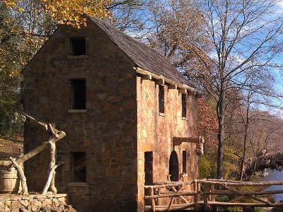

About Peru
History
Peru is a town in the eastern part of Clinton County, NY, just south of Plattsburgh, NY. Nestled between the Adirondack Mountains and Lake Champlain, the Town of Peru was formed from Plattsburgh and Willsborough on Dec. 28, 1792. A part of it was annexed back to Willsborough in 1799 and the towns of Ausable and Black Brook were taken off in 1839. Its present boundaries are the towns of Saranac, Schuyler Falls and Plattsburgh on the north, the towns of Ausable and Black Brook on the south, Lake Champlain on the east and the town of Black Brook on the west. The area of the town is approximately seventy-nine square miles. Some of the early settlers thought that the mountains surrounding the town resembled those of Peru, South America. Hence, the origin of the town's name. The earliest concentration of settlers was in an area called the "Union", a Quaker settlement in the vicinity of the present Keese Homestead and Quaker Cemetery on what is now Union Road. early Quaker settlers or "Friends" as they preferred to be called, were mainly farmers and came from Dutchess County, NY and previously England. Some of the family names of those pioneer settlers still abound in the town today: Allen, Arnold, Baker, Elmore, Everett, Hay(s), Keese and Thew, to mention a few.
Agriculture
 Peru has open fields and fertile land to grow
many successful types of crops. Through out
the year you will see workers dedicated to the
trees and fields that provide ample harvest.
Corn, hay and berries grow plentifully in Peru
however, the main crop is apples. Thousand and thousand
of acres of a variety of apples stretch across
the fields of Peru with beautiful apple blossems in the spring
that turn into bright red, apples in the fall.
Peru is also the home several large dairy farms
that dot the landscape and provide a strong odor
when the weather warms up.
Peru has open fields and fertile land to grow
many successful types of crops. Through out
the year you will see workers dedicated to the
trees and fields that provide ample harvest.
Corn, hay and berries grow plentifully in Peru
however, the main crop is apples. Thousand and thousand
of acres of a variety of apples stretch across
the fields of Peru with beautiful apple blossems in the spring
that turn into bright red, apples in the fall.
Peru is also the home several large dairy farms
that dot the landscape and provide a strong odor
when the weather warms up.
Population
As of the census of 2000, there were 6,370 people, 2,309 households, and 1,777 families residing in the town. The population density was 80.3 people per square mile (31.0/km2). There were 2,510 housing units at an average density of 31.6 per square mile (12.2/km2). The racial makeup of the town was 97.22% White, 0.91% Black or African American, 0.08% Native American, 0.61% Asian, 0.16% from other races, and 1.02% from two or more races. Hispanic or Latino of any race were 0.85% of the population. There were 2,309 households, out of which 39.2% had children under the age of 18 living with them, 63.4% were married couples living together, 9.3% had a female householder with no husband present, and 23.0% were non-families. 18.1% of all households were made up of individuals, and 7.5% had someone living alone who was 65 years of age or older. The average household size was 2.73 and the average family size was 3.07. In the town, the population was spread out, with 28.3% under the age of 18, 6.5% from 18 to 24, 30.4% from 25 to 44, 23.2% from 45 to 64, and 11.5% who were 65 years of age or older. The median age was 37 years. For every 100 females, there were 94.6 males. For every 100 females age 18 and over, there were 90.8 males. The median income for a household in the town was $39,051, and the median income for a family was $47,853. Males had a median income of $32,196 versus $23,984 for females. The per capita income for the town was $19,676. About 7.6% of families and 11.1% of the population were below the poverty line, including 14.3% of those under age 18 and 9.6% of those age 65 or over
Things to Do
Peru is located in the Adirondack mountains. There are count less trails to hike, lakes to kayak and scenery to take your breath away. A 35 minute drive through the mountains will bring you to Lake Placid where the winter Olymics were hosted twice. 10 minutes to the East will bring you to Lake Champlain, home of Champy our local lake monster. A 20 minute ferry ride will land you in Burlington, VT where you can visit Church St. If you feel like staying awhile and need a challenge you can join the elite club the 46ers by successfully hiking all of the 46 peaks in the Adirondack mountains. If you're an early riser, you can park at the Mother Cabrini's Shrine & St. Patrick's Oratory for a breathtaking view of the sunrise. No matter what your interest you will enjoy visiting our little corner of paradise.